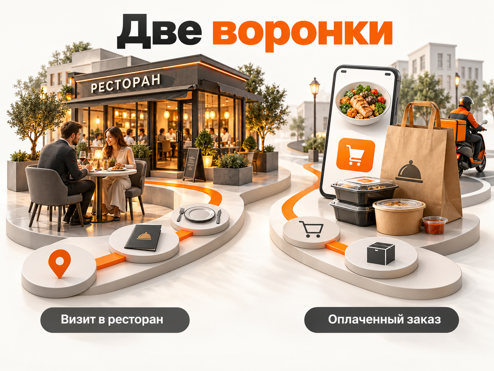
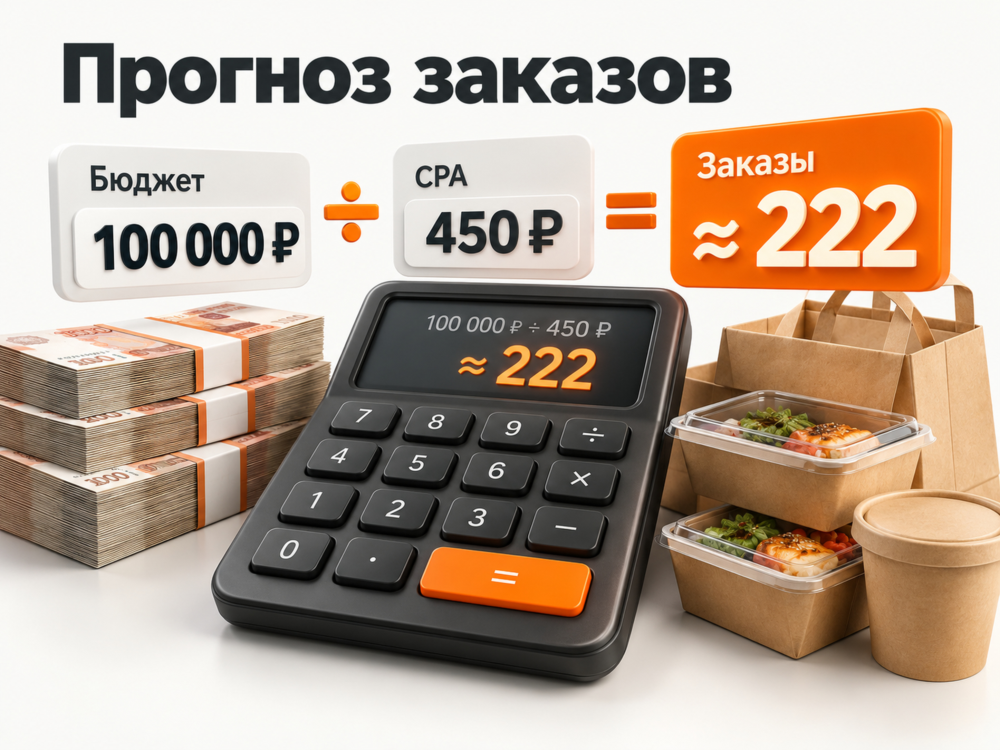

Блог о платном трафике
Продвижение ресторана и доставки еды в 2026 году: каналы, бюджет и окупаемость
Для продвижения ресторана в 2026 году я бы использовал Яндекс Карты, локальную рекламу в Поиске, работу с отзывами и повторными посещениями. Для доставки еды важнее реклама конкретных блюд в Яндекс Директе, собственный сайт с удобным заказом, агрегаторы и программа лояльности.
Главное - разделять привлечение гостей в зал и получение оплаченных заказов доставки. У этих направлений разные рекламные кампании, посадочные страницы и показатели эффективности.
Для собственной доставки регионального ресторана в первоначальном прогнозе можно рассматривать рекламный бюджет 60‑100 тыс. ₽ в месяц и расчётную стоимость заказа 300‑600 ₽. Это ориентир по отдельным опубликованным кейсам, а не средняя цена заказа по российскому рынку. Для самого ресторана стоимость привлечения гостя нужно рассчитывать отдельно.
Как устроен рынок доставки еды в 2026 году
Доставка стала самостоятельным направлением ресторанного бизнеса. Она не только создаёт дополнительную выручку, но и помогает знакомить покупателей с рестораном.
По исследованию Data Insight и Федерации рестораторов и отельеров, проведённому в июле 2025 года среди более 2300 заведений:
- 64% российских ресторанов предлагают доставку;
- в городах-миллионниках доставка есть у 72% заведений;
- в среднем 26% заказов ресторанов приходится на доставку;
- 49% заведений используют агрегаторы;
- 36% принимают заказы через собственный сайт или приложение;
- 27% ресторанов используют несколько способов организации доставки.
Показатели относятся к разным характеристикам бизнеса и не должны суммироваться.
На практике это означает, что собственная доставка и работа через агрегаторы могут дополнять друг друга. Но для получения прибыли необходимо считать экономику каждого канала отдельно.
Продвижение ресторана и доставки: две разные воронки
Для ресторана конечная цель - фактический визит гостя и выручка. Для доставки - выполненный оплаченный заказ с положительной экономикой.
В рекламе самого ресторана человек обычно ищет подходящее заведение. Он изучает меню, фотографии, рейтинг, расположение, может построить маршрут, позвонить или забронировать стол. После этого он должен действительно прийти.
У доставки путь короче. Пользователь выбирает блюда, изучает условия доставки, добавляет позиции в корзину, оплачивает заказ и получает еду.
| Показатель | Ресторан | Доставка еды |
|---|---|---|
| Главный результат | Фактический визит | Выполненный заказ |
| Частые запросы | Ресторан рядом, кафе с верандой, банкет | Доставка суши, заказать пиццу, роллы на дом |
| Посадочная | Страница ресторана, Карты | Меню, категория блюд, корзина |
| Промежуточные действия | Звонок, маршрут, бронь | Просмотр меню, корзина, начало оплаты |
| Основная аналитика | Посещения, выручка, стоимость гостя | Заказы, CPA, средний чек, ДРР |
| Повторные продажи | Повторные визиты | Повторные заказы |
Построенный маршрут ещё не означает, что гость пришёл. Добавление блюда в корзину не равно покупке.

Поэтому для каждой рекламной кампании нужно выбирать цель, максимально близкую к реальному бизнес-результату.
Какие каналы продвижения ресторана работают
Нет одного рекламного инструмента, который одинаково хорошо решает все задачи ресторана и доставки.
| Канал | Для ресторана | Для доставки |
|---|---|---|
| Яндекс Карты | Локальный спрос, маршруты, звонки и бронирования | Поиск заведения и переход к заказу |
| Яндекс Директ, Поиск | Посещения, банкеты, бизнес-ланчи | Заказы по конкретным блюдам и кухням |
| РСЯ | Узнаваемость и возврат заинтересованных гостей | Комбо, акции, ретаргетинг |
| Яндекс Еда и Деливери | Дополнительное знакомство с брендом | Продажи внутри агрегаторов |
| SEO | Бренд, меню, банкеты, локальные запросы | Категории меню, блюда, районы |
| Собственная база клиентов | Возвращение гостей | Повторные покупки |
Если бюджет ограничен, я бы начал с каналов, где пользователь уже ищет ресторан или собирается заказать еду. Широкое охватное продвижение имеет смысл подключать после проверки экономики.
С чего начинать продвижение ресторана
До запуска рекламы стоит проверить четыре элемента.
Первый - предложение. Человек должен сразу понимать формат заведения, кухню, средний чек, особенности меню и причину выбрать именно этот ресторан.
Второй - сайт и карточка организации. Адрес, часы работы, цены и фотографии должны совпадать. Для доставки отдельно необходимы понятная корзина, информация о минимальном заказе, времени и стоимости доставки.
Третий - реальная зона обслуживания. Если курьер может доставлять заказы только в определённые районы, это нужно учитывать при выборе аудитории и настройки рекламных кампаний.
Четвёртый - аналитика. До запуска следует определить, какие действия будут считаться результатом, как они попадут в Метрику и каким образом их можно сопоставить с кассой или системой учёта заказов.
Если эти элементы не подготовлены, увеличение бюджета часто приводит лишь к дополнительным расходам.
Продвижение ресторана в Яндекс Картах
Яндекс Карты особенно важны для ресторанов, потому что пользователь ищет заведение с учётом своего местоположения.
Типичные запросы:
- ресторан рядом;
- кафе в центре города;
- ресторан итальянской кухни;
- где поесть с детьми;
- ресторан с верандой;
- бизнес-ланч рядом;
- ресторан для дня рождения.
Добавить организацию в Яндекс Бизнес можно бесплатно. Владелец получает возможность управлять карточкой, меню, фотографиями и другой информацией о заведении.
Я бы уделил внимание следующим элементам:
- Точный адрес, график работы и контакты.
- Меню с актуальными ценами.
- Качественные фотографии настоящих блюд и интерьера.
- Возможность позвонить, забронировать стол или перейти на сайт.
- Отзывы посетителей и ответы представителя ресторана.
- Особенности заведения: веранда, парковка, детская комната, бизнес-ланчи.
Для дополнительной видимости можно использовать платное продвижение организаций в Картах и других сервисах Яндекса.
Но оценивать эффективность только по количеству построенных маршрутов не стоит. Желательно сопоставлять рекламные данные с бронированиями и фактической посещаемостью.
Подробности о форматах размещения есть в моей статье «Реклама в Яндекс Картах».
Как настроить Яндекс Директ для ресторана и доставки
Я бы не объединял продвижение зала и доставку в одну кампанию с общей целью.
Реклама самого ресторана
Здесь стоит начинать с конкретного сформированного спроса.
Например:
- ресторан итальянской кухни в центре;
- где поесть рядом;
- ресторан для семейного ужина;
- банкетный зал на день рождения;
- бизнес-ланч рядом с офисом.
Посадочная страница должна отвечать на запрос: показывать интерьер и блюда, объяснять ценовой уровень, содержать меню, контакты и возможность забронировать стол.
Если рекламируется банкет, вести пользователя на главную страницу с общим описанием ресторана не всегда разумно. Лучше показать условия банкета, вместимость, меню и способ получения предложения.
Реклама доставки еды
У доставки пользователь обычно ближе к покупке.
Для первоначальной семантики подходят:
- заказать пиццу;
- доставка суши;
- доставка роллов;
- бургеры с доставкой;
- доставка еды ночью;
- заказать обед в офис;
- доставка конкретных блюд.
Крупные категории можно разделять по самостоятельным посадочным страницам, если есть достаточно спроса и данных для оптимизации.
Нужно регулярно проверять поисковые запросы и исключать нецелевой трафик: рецепты, вакансии, поиск бесплатной еды, нерелевантные продукты и районы вне зоны доставки.
Отдельное внимание - географии. Регион показов в настройках Директа не следует автоматически приравнивать к точной зоне доставки. Нужно контролировать фактические запросы, местоположение покупателей и адреса выполненных заказов.
Подробнее о работе с нецелевыми запросами: минус-фразы в Яндекс Директе.
Поиск, РСЯ и товарные объявления
Поиск стоит использовать для аудитории с уже выраженным намерением заказать еду или посетить ресторан.
РСЯ полезна для продвижения конкретных предложений, расширения аудитории и возврата посетителей сайта. Для доставки можно проверять реальные фотографии популярных блюд, сеты, комбо, акции и ретаргетинг брошенной корзины.
В 2026 году в Единой перфоманс-кампании доступны дополнительные элементы объявлений с условиями доставки. В соответствующих форматах РСЯ можно показывать стоимость, тип и срок доставки, а также условия бесплатной доставки.
Для доставки с большим меню стоит рассматривать товарные объявления и работу с каталогом блюд, если сайт и техническая инфраструктура позволяют корректно передавать товары.
Не нужно автоматически запускать множество мелких кампаний. При небольшом количестве покупок данные дробятся, и стратегии сложнее обучаться.
О различиях каналов подробнее: Поиск или РСЯ в Яндекс Директе.
Как увеличить конверсию сайта доставки еды
Хорошая реклама не компенсирует неудобное оформление заказа.
Перед увеличением бюджета я бы проверил весь пользовательский путь с обычного смартфона.
Покупатель должен быстро увидеть меню, выбрать блюдо, уточнить адрес доставки, узнать итоговую стоимость и оформить заказ без ненужных препятствий.
Особенно важно проверить:
- скорость загрузки меню;
- фотографии и актуальные цены;
- работу корзины;
- возможность проверить адрес и зону доставки;
- минимальную сумму заказа;
- условия и время доставки;
- ввод телефона и промокода;
- способы оплаты;
- ошибки при оформлении.
Если пользователь узнаёт о высокой стоимости доставки только на последнем шаге, часть оплаченного трафика будет потеряна.
Практический вывод: прежде чем покупать дополнительные переходы, стоит измерить, сколько посетителей доходит от просмотра меню до успешной оплаты, и найти этап с наибольшими потерями.
Собственная доставка или Яндекс Еда и Деливери
Агрегаторы помогают получить доступ к готовой аудитории, а собственный сайт позволяет лучше управлять рекламой, данными о клиентах и повторными продажами.
В 2026 году ресторан может использовать оба направления, но учитывать их экономику следует раздельно.
| Критерий | Собственная доставка | Агрегаторы |
|---|---|---|
| Привлечение клиентов | Ресторан оплачивает свою рекламу | Покупатели уже находятся на площадке |
| Основные расходы | Реклама, курьеры или логистика, сайт | Комиссии, доставка по условиям договора, продвижение |
| Клиентская база | Больше контроля над повторными продажами | Возможности зависят от правил платформы |
| Аналитика | Можно связать рекламный клик с заказом | Доступна статистика внутри платформы |
| Конкуренция | На этапе привлечения трафика | Непосредственно в выдаче ресторанов |
В Яндекс Еде и Деливери для ресторанов-партнёров доступно продвижение с оплатой за заказы. Ресторан задаёт ставку, а рекламный аукцион учитывает её вместе с качеством предложения и вероятностью заказа. Также доступны отдельные рекламные размещения с оплатой за показы.
При сравнении каналов важно учитывать все расходы, в том числе комиссии и логистику. Оплата за продвижение внутри агрегатора не заменяет остальные расходы на выполнение заказа.
Не стоит считать собственную доставку автоматически более выгодной. Иногда затраты на своих курьеров, поддержание сайта и рекламу оказываются сопоставимы с расходами на агрегатор.
Правильное сравнение - сколько маржинального дохода ресторан получает с выполненного заказа в каждом канале.
Что нужно отслеживать в Яндекс Метрике
Для доставки еды основное целевое действие - покупка. Желательно учитывать именно выполненные оплаченные заказы, отдельно исключая отмены и возвраты.
В Яндекс Метрике можно использовать электронную коммерцию для передачи информации о товарах, корзине, покупках и выручке.
Минимальный набор показателей:
| Показатель | Что показывает |
|---|---|
| CPC | Сколько стоит переход с рекламы |
| Конверсия в покупку | Доля визитов, закончившихся заказом |
| CPA заказа | Расходы на рекламу / количество оплаченных заказов |
| Средний чек | Выручка / число заказов |
| ДРР | Рекламные расходы / выручка с рекламы × 100% |
| Повторные покупки | Сколько клиентов возвращается |
| Маржинальный доход | Сколько остаётся после переменных расходов |
Для ресторана с залом дополнительно важно учитывать подтверждённые бронирования и фактические посещения. Связать их с рекламой можно через данные системы бронирования, программы лояльности и CRM.
Если ресторан принимает заказы по телефону, одного события «нажатие на номер» недостаточно. Понадобятся данные о состоявшемся разговоре и оформленном заказе.
Подробная инструкция: сквозная аналитика Яндекс Директа.
Что показывают рекламные кейсы доставки еды
Публичные кейсы показывают, насколько сильно результат зависит от продукта, сайта, региона и качества настройки рекламы.
| Проект | Опубликованный результат | Практический вывод |
|---|---|---|
| Доставка чебуреков, результаты 2025 года | 4852 заказа, средняя стоимость заказа 295 ₽ | Стоимость заказа зависит от структуры кампаний и оптимизации |
| EDA LOVE, кейс обновлён в августе 2026 года | 570 ₽ за оплаченный заказ из контекстной рекламы | Даже при более высоком CPA возможно масштабирование заказов |
| Rolls Rollos, Саратов, кейс опубликован в феврале 2026 года | Рост конверсии сайта с 6,7% до 12%, снижение CPA вдвое | Работа с сайтом, предложением и сегментацией влияет на результат |
Это опубликованные результаты отдельных рекламных проектов, а не мои личные кейсы и не средние показатели рынка.
По двум проектам с абсолютной стоимостью заказа виден большой разброс: от 295 до 570 ₽. Для предварительного расчёта собственной доставки можно округлить эти значения до 300‑600 ₽ за заказ.
Такой диапазон пригоден для построения первоначальной модели, но его нельзя автоматически переносить на Москву, премиальные рестораны, небольшие зоны доставки или новый продукт без проверенного спроса.
Сколько стоит реклама доставки еды в 2026 году
Для первого теста региональной доставки я бы рассматривал бюджет около 60‑100 тыс. ₽ в месяц при условии, что меню, сайт и процессы заказа уже подготовлены.
Это экспертная рекомендация по размеру теста, а не обязательный бюджет Яндекс Директа. Фактическая сумма зависит от объёма спроса, конкуренции и экономики бизнеса.
Для расчёта возьмём три значения CPA: 300, 450 и 600 ₽ за заказ.
Количество заказов = рекламный бюджет / стоимость заказа.
| Бюджет | CPA 300 ₽ | CPA 450 ₽ | CPA 600 ₽ |
|---|---|---|---|
| 60 000 ₽ | 200 заказов | 133 заказа | 100 заказов |
| 100 000 ₽ | 333 заказа | 222 заказа | 167 заказов |
Например, если потратить 100 000 ₽ и получать заказы по 450 ₽, получится примерно 222 заказа.
Это математическая модель, а не гарантия объёма покупок. Реальный спрос может ограничить количество заказов, а рекламный аукцион и конверсия сайта изменить CPA.

При тестировании стоит фиксировать не только стоимость покупки, но и итоговую выручку, отмены заказов, размер скидок и маржинальный доход.
Подробнее о расчётах: прогноз бюджета Яндекс Директа.
Как рассчитать допустимую стоимость заказа
Максимальную цену привлечения заказа нужно определять через маржинальный доход, а не только через средний чек.
Возьмём условную ресторанную доставку:
- средний чек: 1500 ₽;
- доля маржинального дохода после переменных расходов: 35%;
- маржинальный доход с одного заказа: 525 ₽.
Все значения примерные и используются только для объяснения метода расчёта.
Теперь сравним три варианта стоимости заказа.
| CPA | Маржинальный доход до рекламы | Остаток после рекламы |
|---|---|---|
| 300 ₽ | 525 ₽ | +225 ₽ |
| 450 ₽ | 525 ₽ | +75 ₽ |
| 600 ₽ | 525 ₽ | -75 ₽ |
Получается, что CPA 600 ₽ в таком примере не окупается первым заказом. При этом таблица ещё не учитывает постоянные расходы ресторана.
Для безубыточности первого заказа до покрытия постоянных расходов допустимый CPA не должен превышать 525 ₽. Если ресторану требуется сохранить дополнительную прибыль, целевой CPA должен быть ниже.
Почему повторные заказы меняют экономику рекламы
Для доставки еды особенно важно считать не только стоимость первого заказа, но и дальнейшие покупки привлечённого клиента.
Допустим, клиент совершил два заказа по 1500 ₽. При условной маржинальности 35% они принесли 1050 ₽ маржинального дохода до рекламы.
Если за привлечение клиента один раз заплатили 450 ₽, а повторный заказ пришёл без дополнительных рекламных расходов, останется 600 ₽ до покрытия постоянных расходов.
Сравнение:
| Показатель | Один заказ | Два заказа |
|---|---|---|
| Выручка | 1500 ₽ | 3000 ₽ |
| Маржинальный доход | 525 ₽ | 1050 ₽ |
| Расход на привлечение | 450 ₽ | 450 ₽ |
| Остаток | 75 ₽ | 600 ₽ |
Важно, чтобы повторный заказ действительно не требовал дополнительных затрат на привлечение. Если клиент каждый раз возвращается через платную рекламу или дорогую акцию, экономику нужно пересчитывать.
Для увеличения повторных покупок ресторану полезны программа лояльности, удобное повторение заказа, персональные предложения и собственная база клиентов при соблюдении правил обработки персональных данных.
Поэтому при масштабировании рекламы я бы учитывал стоимость привлечения нового клиента и его покупки за последующие месяцы, а не ориентировался исключительно на CPA первой покупки.
Что рекламировать ресторану и доставке
Лучше рекламировать конкретный продукт или ситуацию потребления, чем использовать универсальное сообщение «У нас вкусно».
Для зала можно тестировать:
- бизнес-ланчи;
- семейные ужины;
- банкеты и дни рождения;
- завтраки;
- рестораны с определённой кухней;
- сезонные предложения.
Для доставки:
- популярные блюда;
- наборы и комбо;
- предложения для компании;
- обеды в офис;
- условия бесплатной доставки;
- подарки или бонусы к заказу.
Каждую акцию стоит оценивать не только по приросту заказов, но и по изменению маржинального дохода. Скидка может увеличить количество покупок и одновременно уменьшить прибыль.
SEO для ресторана и доставки еды
Для ресторана полезно развивать локальное SEO: актуальные сведения о заведении, меню, страницы банкетов и других услуг, качественные фотографии и отзывы.
Для доставки можно создавать отдельные страницы под реальные категории блюд и географию обслуживания.
Например, если ресторан продаёт пиццу и роллы, самостоятельные категории помогут поисковой системе и пользователям быстрее находить подходящее меню.
Создавать десятки одинаковых страниц под соседние районы не следует. Географическая посадочная оправдана, когда на ней действительно есть отдельные условия обслуживания или другая полезная информация.
SEO работает в более длительном горизонте, чем платная реклама. Его стоит развивать параллельно с каналами, которые способны давать заказы непосредственно после запуска.
Пошаговый план продвижения на первые два месяца
Первая неделя: подготовка
Проверить Яндекс Карты, сайт, мобильную корзину, условия доставки и оформление покупки.
Определить средний чек, маржинальность заказа и допустимую стоимость привлечения.
Настроить Яндекс Метрику, электронную коммерцию и передачу реальных покупок.
Вторая неделя: запуск рекламы
Запустить отдельные направления под ресторан и доставку.
Для доставки в первую очередь протестировать запросы с явно выраженным намерением купить.
Для ресторана проверить локальные запросы, страницы специальных предложений и качество карточки в Картах.
РСЯ подключать с отдельной гипотезой и понятными целями.
Третья и четвёртая недели: оптимизация
Анализировать поисковые запросы, устройства, географию, время заказов, CPA и ДРР.
Выявлять проблемы в корзине и оплате. Проверять, какие блюда и предложения покупают чаще.
Перераспределять бюджет по фактическим продажам, а не по одним лишь кликам.
Второй месяц: масштабирование
Если экономика сходится, постепенно увеличивать расходы на результативные направления.
Тестировать новые фотографии, комбо и предложения. Подключать повторные коммуникации и ретаргетинг.
Если стоимость привлечения превышает допустимую, сначала исправлять причину: слабый оффер, неудобный сайт, нецелевой трафик или завышенные затраты на выполнение заказа.
Основные ошибки при продвижении ресторана
Самая частая методологическая ошибка - принимать промежуточные действия за продажи.
Построенный маршрут не означает посещение ресторана, а добавление в корзину не гарантирует заказ.
Другие распространённые проблемы:
- общая рекламная цель для зала и доставки;
- реклама за пределами рабочей зоны доставки;
- неподходящая посадочная страница;
- отсутствие данных о стоимости и отменах заказов;
- большое количество кампаний при недостатке конверсий;
- оценка по CPA без учёта маржинального дохода;
- постоянные скидки без проверки прибыльности;
- игнорирование повторных покупок.
Поэтому оценивать работу рекламы следует по реальным заказам, гостям и финансовому результату.
Какой бюджет и результат закладывать в прогноз
Для собственной доставки регионального ресторана с работающим сайтом в качестве стартовой модели можно использовать бюджет 60‑100 тыс. ₽ в месяц и стоимость выполненного заказа 300‑600 ₽.
При бюджете 100 000 ₽ расчёт даёт примерно 167‑333 заказа. Средний сценарий с CPA 450 ₽ соответствует приблизительно 222 заказам.
Этот прогноз не является нормативом рынка. После получения собственных данных о заказах, выручке и маржинальности его необходимо пересчитать.
Для продвижения зала единую цену гостя я бы не закладывал. Сначала нужно измерить стоимость бронирования или обращения, затем связать эти действия с посещениями и выручкой.
Если нужна настройка или ведение Яндекс Директа для ресторана и доставки еды, на моём сайте можно ознакомиться с условиями работы и другими рекламными проектами. Я занимаюсь платным трафиком более 10 лет и рассматриваю эффективность рекламы через реальные обращения, заказы и продажи.